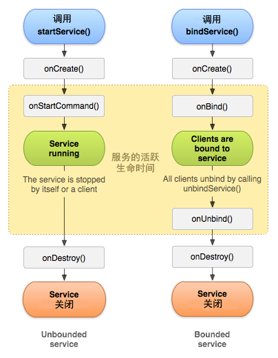

Service是Android中实现程序后台运行的解决方案，适用于去执行那些不需要和用户交互而且还要求长期运行的任务
创建Service 创建一个MyService类继承自Service，并重写onBind()方法
1 2 3 4 5 6 7 8 9 public class MyService2 extends Service { public MyService2 () { } @Override public IBinder onBind (Intent intent) { throw new UnsupportedOperationException ("Not yet implemented" ); } }
在清单文件中注册Service类
android:exported; 是否允许其他应用隐式调用该组件
1 2 3 4 5 <service android:name =".MyService2" android:enabled ="true" android:exported ="true" > </service >
Service生命周期 1 2 3 4 5 6 7 8 startService() stopService() bindService() unbindService()

1 2 3 4 5 6 7 8 9 10 11 12 13 14 15 16 17 18 19 20 21 22 23 24 25 26 27 28 29 30 31 32 33 34 35 36 37 38 39 40 41 42 43 44 import android.app.Service;import android.content.Intent;import android.os.IBinder;import android.util.Log;public class MyService2 extends Service { private final String TAG = "xin" ; @Override public void onCreate () { super .onCreate(); Log.d(TAG, "onCreate()" ); } @Override public int onStartCommand (Intent intent, int flags, int startId) { Log.d(TAG, "onStartCommand()" ); return super .onStartCommand(intent, flags, startId); } @Override public void onDestroy () { super .onDestroy(); Log.d(TAG, "onDestroy()" ); } @Override public IBinder onBind (Intent intent) { Log.d(TAG, "onBind()" ); return null ; } @Override public boolean onUnbind (Intent intent) { Log.d(TAG, "onUnbind()" ); return super .onUnbind(intent); } }
启动Service 通过startService()启动 启动状态：
启动时，依次调用onCreate -> onStartCommand 如果Service已经被启动，再次启动时将不会执行onCreate，而是直接执行onStartCommand stopService时直接进入onDestory 无论调用了几次startService，一次stopService就能结束该Service 1 2 3 4 5 Intent intent = new Intent (MyService.this ,MyService2.class); startService(intent); stopService(intent);
通过bindService()启动 绑定状态：
启动时只运行onCreate() 停止时，依次调用onUnbind -> onDestory 当与之绑定的Activity被销毁时自动解绑Service Activity与Service绑定需要实例化一个ServiceConnection坐桥梁
1 2 3 4 5 6 7 8 9 10 11 12 13 14 ServiceConnection serviceConnection = new ServiceConnection () { @Override public void onServiceConnected (ComponentName name, IBinder service) { } @Override public void onServiceDisconnected (ComponentName name) { } };
绑定Service
1 2 3 4 5 bindService(intent, serviceConnection, Context.BIND_AUTO_CREATE); unbindService(serviceConnection);